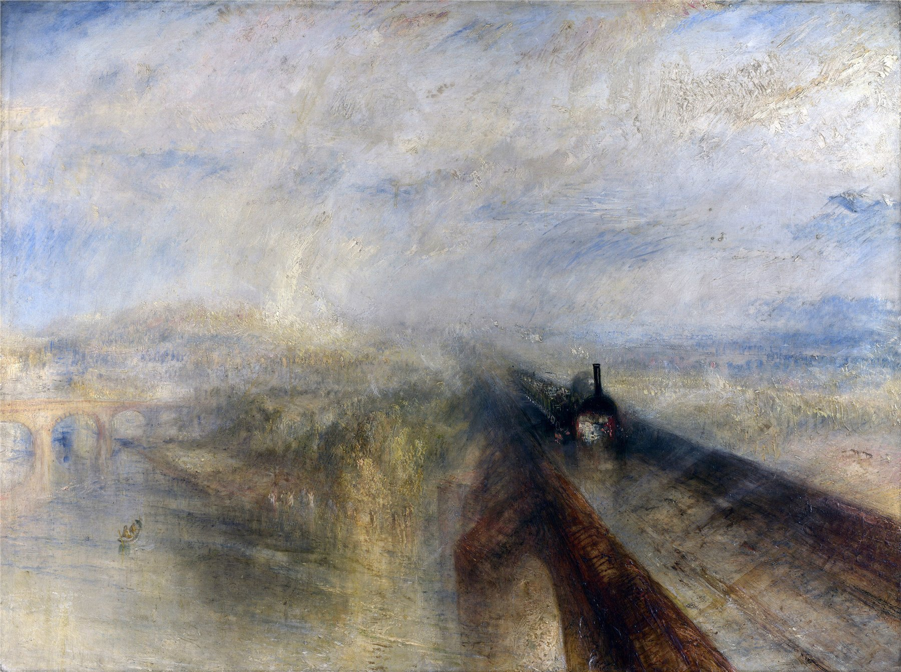

一列蒸汽机车正从画面深处冲出，车头顶着一团几乎要吞掉整幅画布的白色蒸汽与雨雾——这是1844年的英国，摄影术还没能捕捉到任何"动态模糊"，透纳却已经用油画笔把"速度"这种纯粹的感觉画了出来。这幅画常被后世称为"第一幅未来主义绘画"，比意大利未来派的宣言早了将近七十年。
反常规的透视：全画只有一条真正的直线——铁轨与桥面构成的对角线，从右下角一路冲向画面深处的灭点，机车正对着我们疾驰而来。1844年的风景画几乎都遵循稳定的水平线与对称构图，透纳却选了一个近乎要把观众撞倒的视角，这在当时是极度反传统的做法。
画里藏着一座"不被相信"的桥：左侧那座桥，是工程师伊桑巴德·金德姆·布鲁内尔设计的梅登黑德铁路桥（1838年建成）——当时公众普遍不相信这么扁平宽阔的砖拱能够承重，布鲁内尔却硬是造出了当时世界上最平的砖拱桥之一。透纳把这座"敢于挑战常识的桥"放进画面，本身就是一种态度声明。
一只正在被超越的野兔：轨道前方隐约有一只野兔在奔跑——国家美术馆的官方说明也指出了这个细节。野兔是当时公认速度最快的陆生动物之一，画面暗示它正被蒸汽机车追上、超越：自然的速度极限，正在被工业的速度取代。
1840年，查尔斯·洛克·伊斯特莱克翻译出版了歌德《色彩论》的英译本，晚年的透纳读到后深受触动——就在这幅画完成前一年（1843年），他画了两幅直接以歌德色彩理论为题的作品《阴影与黑暗》与《光与色彩》。歌德认为：黄、橙、红是"正面的""向前逼近"的颜色，蓝、紫、绿则是"负面的""向后退去"的颜色。这套逻辑几乎可以直接拿来解释这幅画的用色。
画面中央那团被暖金色光线撕开的雨云，正是"暖色前进"最直白的示范：观众的视线会自然被机车周围那一小片破雾而出的金黄光斑吸引，即使它面积极小，也能压过周围大片冷灰蓝的雨幕——这是色彩理论意义上的视觉焦点，而不是靠轮廓线画出来的焦点。
关于这幅画流传着一则轶事——真实性无法完全核实，但被多部艺术史著作反复引用：据说69岁的透纳曾亲自乘坐大西部铁路的火车，在一场暴风雨中把头伸出车窗外足足九分钟，任凭风雨拍打自己的脸，只为亲眼观察高速穿越暴雨时光线与水汽真实的样子——这与他年轻时"把自己绑在桅杆上观察暴风雪"的传说如出一辙。
技法上，透纳晚年大量使用"干擦法"（scumbling）：用几乎不含油的干燥颜料，快速松散地扫过已经干透的底层色彩，让底色若隐若现地透出来，制造出雾气弥漫、边界消融的效果——这与三十年后印象派的"松动笔触"遥相呼应，却早了整整一代人。
大西部铁路由布鲁内尔设计建造，以7英尺宽轨与超高速度著称，通车不久即成为当时英国最快的铁路——这幅画诞生的年代，正是英国"铁路狂热"（Railway Mania）投机与扩张的顶峰。
摄影术要到几十年后才真正捕捉到运动模糊，而透纳在1844年，仅凭观察与记忆，就用颜料"画"出了高速运动本身带来的视觉眩晕感——机车轮廓消融在自己扬起的蒸汽与雨雾里，几乎抽象成一团光斑，这在当时是极为激进的表现手法，甚至被同代评论家嘲讽为"看不懂在画什么"。
画面里那只隐约的野兔、桥下悠闲的船影——这些正在被火车抛在身后的"旧世界"细节，让这幅画不只是一幅"火车画"，更是一份关于"速度如何重塑人类感知"的视觉备忘录。1844年的观众第一次意识到：坐在火车上看到的世界，和步行、骑马看到的世界，是两种完全不同的视觉经验。这份科技加速生活带来的焦虑与兴奋交织的情绪，两百年后的今天依然精准命中。
约瑟夫·马洛德·威廉·透纳（J. M. W. Turner，1775–1851），生于伦敦考文特花园一个理发师家庭，14岁即入读英国皇家美术学院。他一生痴迷于光线、大海与天气最极端的状态——暴风雪、火灾、日出日落——晚年作品越来越抽象，色彩与笔触几乎挣脱了具体形象的束缚，被后世公认为印象派乃至抽象表现主义的重要先声。他1851年在伦敦切尔西的寓所去世，遗嘱将大量作品捐赠给国家，如今大部分藏于泰特美术馆，而这幅《雨、汽与速度》现藏于伦敦国家美术馆。